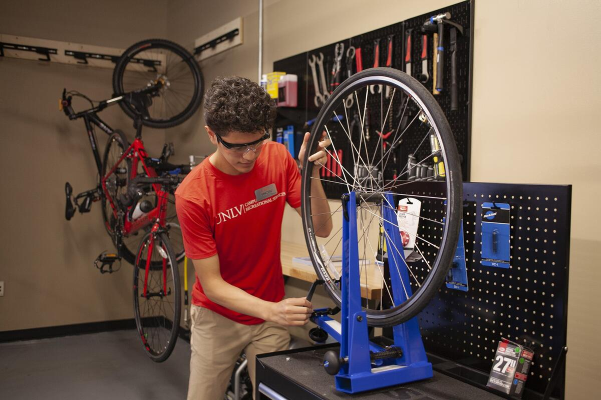
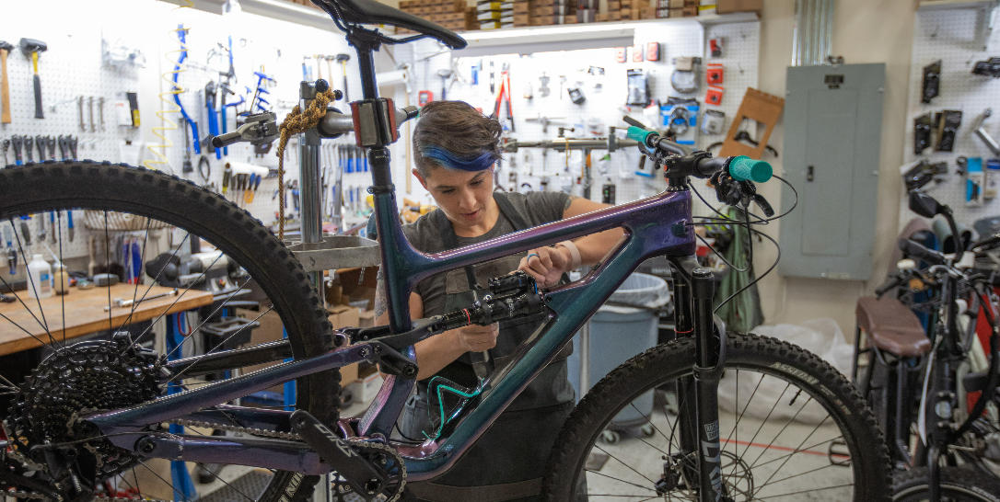
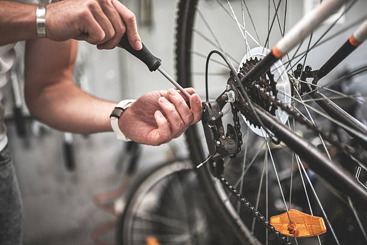

Explore Our Premium Bike Services

We provide professional wheel tuning services to ensure your bicycle performs at its best.
We make sure your wheel runs straight, strong and reliable.

We offer reliable and professional installation services to ensure your equipment is fitted safely and correctly.
Whether it is bicycle components, accessories, or other equipment, we make sure everything is installed properly and ready to use.
Quality, safety and customer satisfaction are our priorities.
We provide professional brake adjustment services to ensure your bicycle stops safely and smoothly.
Properly adjusted brakes improve safety, control and riding confidence.